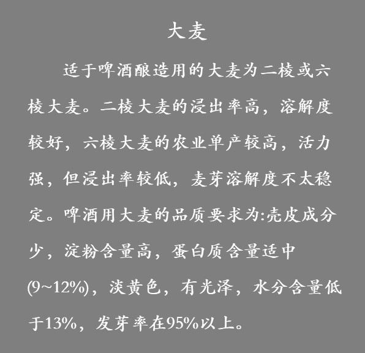

首页
国产品牌
原料与生产
利与弊
原料

人生得意须尽欢，莫使金樽空对月。
啸傲东轩下，聊复得此生。
生产
麦芽制造
大麦贮存
刚收获的大麦有休眠期，发芽力低，要进行贮存后熟
大麦精选
用风力、筛机除去杂物，按麦粒大小分级
浸麦
在浸麦槽中用水浸泡2至3日，同时进行洗净，除去浮麦，使大麦的水分浸麦度达到42~48%
发芽
在控温通风条件下进行发芽形成各种使麦粒内容物质进行溶解。适宜温度为13~18℃，周期为4~6日，根芽的伸长为粒长的1~1.5倍。长成的湿麦芽称绿麦芽
贮存
焙燥后的麦芽，在除去麦根、精选、冷却之后放入混凝土或金属贮仓中贮存
焙燥
目的是降低水分，终止绿麦芽的生长和的分解作用，以便长期贮存;使麦芽形成赋予啤酒色、香、味的物质;易于除去根芽，焙燥后的麦芽水分为3~5%
酿造
原料粉碎
将麦芽、大米分别由粉碎机粉碎至适于糖化操作的粉碎度。
糖化
将粉碎的麦芽和淀粉质辅料用温水分别在糊化锅、糖化锅中混合，调节温度
发酵
冷却后，添加酵母送入发酵池或圆柱锥底发酵罐中进行发酵，用蛇管或夹套冷却并控制温度。进行下面发酵时，最高温度控制在8~13℃，发酵过程分为起泡期、高泡期、低泡期，一般5~10日发酵成为嫩啤酒，苦味犟、口味粗糙、CO2含量低，不宜饮用
后酵
为使嫩啤酒后熟，将其送入贮酒罐中或继续在圆柱锥底发酵罐中冷却至0℃左右，调节罐内压力，使CO2溶入啤酒中。贮酒期需1~2月，在此期间残存的酵母、冷凝固物等逐渐沉淀，啤酒逐渐澄清，CO2在酒内饱和，口味醇和适于饮用
过滤
为了使啤酒澄清透明成为商品，啤酒在-1℃下进行澄清过滤。要求:过滤能力大、质量好，酒和CO2的损失少，不影响酒的风味。方式有硅藻土过滤、纸板过滤、微孔薄膜过滤等
灌装
桶装
桶的材质为铝或不锈钢，容量为15、20、25、30、50L。其中30L为常用规格。桶装啤酒一般是未经巴氏杀菌的鲜啤酒。鲜啤酒口味好，成本低，但保存期不长，适于当地销售
罐装
1935年起始于美国。第二次世界大战中因军需而发展很快。罐装啤酒体轻，运输携带和开启饮用方便，因此很受消费者欢迎，发展很快。
瓶装
为保持啤酒质量，减少紫外线的影响，一般采用棕色或深绿色的玻璃瓶。空瓶经浸瓶槽(碱液2~5%，40~70℃)浸泡，在洗瓶机洗净，经灌装机灌入啤酒，压盖机压上瓶盖。经杀菌机巴氏杀菌后，检查合格即可装箱出厂
PET塑料瓶装
优点：高度透明，重量轻，启封后可再次密封，价格合理。缺点：保气性差，在存放过程中，CO2逐渐减少。增添涂层能改善保气性，但贮存时间不能长。且不能预先抽空或巴氏杀菌，需用特殊灌装程序，以避免摄入空气和污染杂菌。
联系电话：17303017177 欢迎批评指正
© 2019 Created By 周瑶鑫